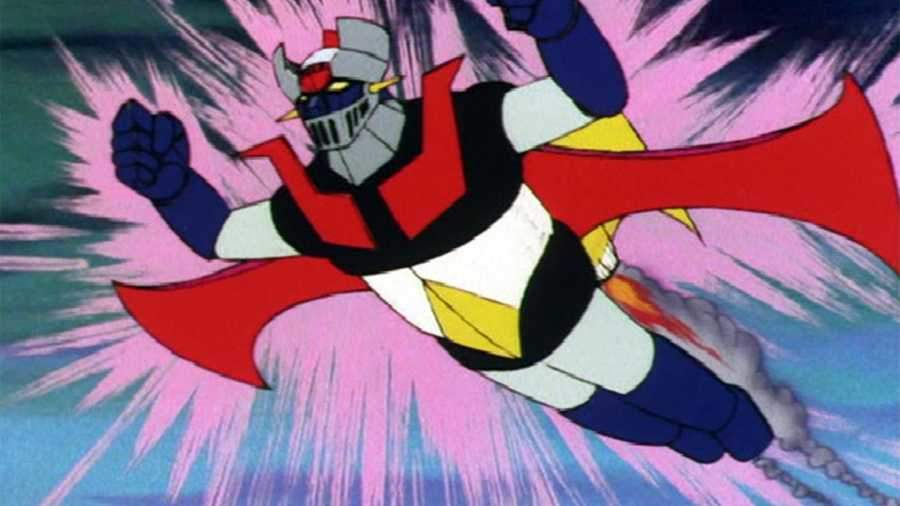
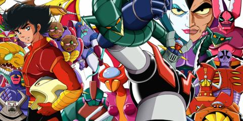

Serie Favorita
Mazinger Z

Nombre Mazinger Z
Categoria Mecha
Resumen La historia de la serie trata sobre un grupo de científicos que disponen de un robot gigante en su lucha
contra las fuerzas malignas del Dr. Hell (también conocido como Dr. Infierno en algunos países de habla hispana).
El manga fue publicado por primera vez el 2 de octubre de 1972 en el semanario Shōnen Jump.
Autor: Gō Nagai
Personajes:
Kōji Kabuto
Shirō Kabuto
Sayaka Yumi
Profesor Gennosuke Yumi
Personajes Antagonistas :
Doctor Hell
Barón Ashura
Conde Brocken

El origen de la trama empieza en la isla abandonada de Bardos. En ella el Dr. Hell encabeza una
excavación arqueológica donde descubren los restos de unos gigantescos robots milenarios.
Enterrados bajo las ruinas de lo que parece haber sido la ciudad de una civilización milenaria.
El Dr Hell pide que se le deje investigar en privado, hasta conocer mejor los detalles del descubrimiento.
Acabada su investigación, el Dr. Hell reúne a todos los científicos y les presenta a los robots restaurados.
Con ellos, anuncia su intención de dominar el mundo y pide la lealtad de todos los presentes.
Los científicos se niegan y el Dr. Hell, despierta a los robots que controla y masacra a los presentes.
Tan solo el profesor Juzo Kabuto consiguió escapar de la masacre, refugiándose en Japón, donde comenzó a
desarrollar un robot construido con los últimos avances de energía y tecnología.
Usando la energía fotónica
del reactor de Japanium y la Super Aleación Z de su invención, creada con este mismo material y única capaz
de soportar la energía fotónica. Juzo esperaba poder impedir los ambiciosos planes del Dr. Hell, dando vida al
Mazinger Z.